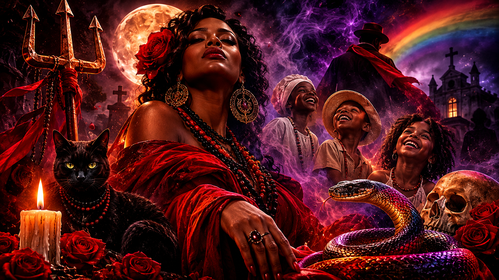

Entre espíritos, Orixás e ancestralidade: compreendendo as linhas de trabalho, a dualidade e a diversidade espiritual na Umbanda
Eguns, Erês, Exus, Pombagiras, Exus Mirins e Orixás: o que distingue cada manifestação na Umbanda, sem transformar uma interpretação particular em doutrina universal.

Entre espíritos, Orixás e ancestralidade: linhas de trabalho, dualidade e diversidade na Umbanda • Acervo Pombagiras.com
Introdução: compreender a espiritualidade para além dos nomes e das classificações
Quem começa a estudar a Umbanda frequentemente encontra uma quantidade expressiva de nomes, entidades, divindades, linhas de trabalho, falanges e manifestações espirituais. Em pouco tempo, surgem perguntas inevitáveis: quem são os Eguns? Qual é a diferença entre um espírito desencarnado e um Guia espiritual? O que distingue um Erê de um Exu Mirim? Exu é um Orixá ou uma entidade? Pombagira é uma manifestação feminina de Exu? E onde entram os Orixás nessa organização?
Essas perguntas não são apenas curiosidades de quem está começando. Elas tocam em questões fundamentais sobre a maneira como diferentes comunidades religiosas compreendem a vida, a morte, a ancestralidade, a evolução espiritual, a divindade e a relação entre o mundo visível e o invisível.
Existe ainda uma dimensão frequentemente esquecida nessas explicações: a diversidade humana.
O gênero, a expressão corporal, a sexualidade e as diferentes maneiras de existir também aparecem nas discussões sobre espiritualidade. Figuras como Logun Edé e Oxumaré, as manifestações de Pombagiras por médiuns de diferentes gêneros e as experiências de pessoas LGBTQIA+ dentro das comunidades religiosas abrem caminhos importantes para refletir sobre a complexidade das tradições afro-brasileiras.
Entretanto, é necessário começar por uma advertência: a Umbanda não possui uma única organização doutrinária universal. Existem diferentes vertentes, fundamentos, linhagens, tradições orais e maneiras de interpretar o trabalho espiritual. Uma explicação válida em determinado terreiro pode não corresponder integralmente à compreensão de outra casa.
Por isso, compreender essas manifestações exige mais do que decorar definições. É preciso conhecer os contextos, distinguir conceitos e reconhecer que as religiões afro-brasileiras são sistemas vivos de conhecimento, construídos e transmitidos por comunidades, sacerdotisas, sacerdotes, médiuns e praticantes.
Este estudo percorre essas relações, desde a ancestralidade dos espíritos desencarnados até a presença dos Orixás, passando pelas linhas de trabalho, pela Esquerda da Umbanda e pelas possibilidades de compreender gênero e identidade dentro da experiência religiosa.
1. Eguns: ancestralidade, morte e a continuidade da existência
A palavra Egun, também escrita Egum, está relacionada à ancestralidade e aos espíritos de pessoas falecidas. Sua utilização possui diferentes contextos religiosos, especialmente nas tradições de origem iorubá e nas religiões afro-brasileiras.
Na linguagem religiosa, entretanto, o significado atribuído ao termo depende da tradição, da comunidade e do contexto em que ele é empregado.
Na Umbanda, é comum encontrar explicações nas quais Egun designa um espírito desencarnado. Nesse sentido amplo, um espírito que já viveu na Terra pode ser compreendido como um desencarnado, independentemente de sua condição espiritual.
Isso significa que a palavra não deve ser automaticamente associada ao mal, à perturbação ou à obsessão.
Um espírito desencarnado não é necessariamente um espírito sofredor. Tampouco a morte, por si só, determina que uma consciência esteja perdida, desorientada ou em conflito com os vivos.
A associação popular entre Egun e manifestações negativas aparece em determinados discursos de terreiro, mas não representa a totalidade dos significados religiosos da palavra.
1.1. Ancestralidade não é sinônimo de perturbação espiritual
A ancestralidade ocupa um lugar importante nas religiões afro-brasileiras. Ela representa a continuidade dos vínculos entre gerações, a memória dos que vieram antes e a relação entre os vivos e aqueles que já partiram.
É necessário, portanto, distinguir o respeito aos ancestrais da interpretação de que todo espírito desencarnado representa uma ameaça.
Em diferentes tradições, os mortos podem ser compreendidos por perspectivas distintas: ancestrais respeitados, espíritos que necessitam de auxílio, entidades espirituais de trabalho ou consciências cuja condição exige cuidados específicos.
Na Umbanda, determinadas casas trabalham com a ideia de doutrinação, esclarecimento e encaminhamento de espíritos considerados em sofrimento. Outras desenvolvem explicações próprias sobre essas manifestações.
O importante é não transformar uma classificação religiosa particular em uma regra aplicável a todas as comunidades.
1.2. Eguns, obsessores e Kiumbas: por que não são necessariamente a mesma coisa?
No vocabulário de algumas casas de Umbanda, encontramos termos como espírito sofredor, obsessor, zombeteiro e Kiumba.
Essas palavras são empregadas para descrever diferentes interpretações sobre a condição e o comportamento de determinadas manifestações espirituais.
Em algumas concepções:
- Espírito desencarnado: designação ampla para uma consciência que deixou o corpo físico.
- Espírito sofredor: espírito que, segundo determinada compreensão religiosa, permanece em sofrimento, confusão ou dificuldade de adaptação à condição após a morte.
- Obsessor: manifestação espiritual interpretada como uma influência persistente e prejudicial sobre uma pessoa.
- Kiumba: termo utilizado em determinadas tradições para designar espíritos considerados perturbadores, zombeteiros ou associados a práticas espirituais negativas.
Essas categorias não devem ser confundidas com classificações universais e científicas. São conceitos pertencentes a determinados sistemas de interpretação religiosa.
Também é importante evitar a ideia de que todo sofrimento espiritual significa maldade consciente. Dor, apego, confusão e intenção de prejudicar são situações diferentes.
1.3. Como a Umbanda trabalha com essas manifestações?
Em algumas casas, os trabalhos espirituais incluem práticas de esclarecimento, oração, descarrego, orientação e encaminhamento.
Entidades como Pretos Velhos, Exus e outras linhas podem participar desses trabalhos, conforme os fundamentos de cada terreiro.
O propósito, dentro dessas concepções, não é simplesmente combater ou destruir um espírito, mas restabelecer o equilíbrio, orientar consciências e preservar a segurança espiritual dos envolvidos.
Essa perspectiva revela um princípio importante: a espiritualidade não deve ser construída exclusivamente pelo medo dos mortos.
A relação com a ancestralidade também envolve memória, respeito, responsabilidade e compreensão da continuidade da existência.
2. Erês: infância espiritual, alegria e conhecimento
Os Erês ocupam um lugar particular na Umbanda. Associados à chamada Linha das Crianças ou Ibejada, manifestam-se por meio de comportamentos, linguagens e expressões que remetem ao universo infantil.
A brincadeira, a espontaneidade, a alegria e a comunicação direta são características frequentemente relacionadas a essas manifestações.
Entretanto, reduzir os Erês à distribuição de doces, às festas religiosas ou ao comportamento infantil é ignorar a complexidade simbólica e espiritual dessa linha.
Em muitas casas, os Erês representam renovação, leveza, sinceridade, acolhimento e possibilidades de reconstrução emocional.
2.1. O que significa ser um Erê?
Na linguagem de diferentes terreiros, Erê é uma entidade espiritual associada à manifestação infantil.
A compreensão sobre sua natureza, sua origem e sua relação com os Orixás varia conforme a tradição.
Em algumas interpretações, os Erês são entendidos como espíritos que trabalham em uma linha específica. Em outras, a relação entre Erê, Ibejada e Ibeji recebe explicações próprias.
Não é adequado afirmar que todos os Erês são necessariamente crianças desencarnadas ou que sua aparência infantil corresponde à idade que tiveram em uma existência anterior.
A manifestação infantil pode ser compreendida como uma forma de trabalho espiritual, e não como uma descrição biográfica literal.
2.2. A diferença entre Erê, Ibeji e Cosme e Damião
Esses três termos aparecem frequentemente juntos, mas possuem significados diferentes.
Erês: são manifestações ou entidades espirituais associadas à Linha das Crianças em diferentes tradições de Umbanda.
Ibeji: é uma divindade ou princípio divino associado aos gêmeos na tradição iorubá. Sua compreensão não deve ser reduzida à ideia de um conjunto de espíritos infantis.
Cosme e Damião: são santos da tradição católica, cuja associação com celebrações das crianças nas religiões afro-brasileiras resulta de processos históricos de aproximação e sincretismo religioso.
As relações entre esses elementos não são idênticas em todas as casas.
A presença dos santos católicos nas celebrações de Erês, por exemplo, precisa ser compreendida dentro da história das relações entre as religiões africanas, o catolicismo e a formação das tradições afro-brasileiras.
2.3. O trabalho espiritual dos Erês
Em diferentes terreiros, os Erês são associados ao acolhimento, à alegria, à renovação e ao trabalho com questões emocionais.
A brincadeira pode funcionar como uma linguagem simbólica de aproximação. A espontaneidade pode revelar situações que o discurso formal não alcança.
Mas é importante não atribuir a essas entidades poderes terapêuticos garantidos ou substituir cuidados médicos e psicológicos por explicações exclusivamente espirituais.
A experiência religiosa pode oferecer pertencimento, conforto e apoio emocional. Isso não significa que toda tristeza ou sofrimento psíquico tenha origem espiritual.
Os Erês também nos lembram de uma questão relevante: a alegria não precisa ser confundida com superficialidade. Em muitas tradições, ela constitui uma maneira legítima de expressar força, fé e resistência.
3. Exu e Pombagira: a Esquerda, a proteção e a complexidade da experiência humana
Poucos assuntos provocam tantas interpretações equivocadas quanto Exu e Pombagira.
Durante muito tempo, essas manifestações foram associadas a imagens demonizadas, sobretudo em discursos religiosos que interpretaram as tradições africanas a partir de categorias cristãs.
Essa associação produziu preconceitos, perseguições e interpretações distorcidas sobre entidades que ocupam lugares importantes em diferentes comunidades de Umbanda e Quimbanda.
Para compreender Exu e Pombagira, é necessário começar por uma distinção fundamental.
3.1. Exu Orixá e Exu entidade: uma distinção indispensável
O nome Exu aparece em contextos religiosos diferentes.
Na tradição iorubá e no Candomblé, Exu é uma divindade fundamental, relacionada à comunicação, ao movimento, à circulação, à transformação e à dinâmica das relações.
Na Umbanda, a palavra Exu também designa entidades espirituais que trabalham em determinadas linhas e funções religiosas.
Essas duas utilizações estão relacionadas historicamente e simbolicamente, mas não são simplesmente a mesma coisa.
O Exu Orixá não deve ser apresentado como um espírito humano desencarnado que evoluiu após uma vida na Terra.
Da mesma maneira, as entidades chamadas Exus na Umbanda não devem ser automaticamente identificadas com a divindade Exu das tradições iorubás.
Essa distinção é essencial para evitar confusões entre sistemas religiosos diferentes.
3.2. O que significa trabalhar na Esquerda?
Em diversas vertentes da Umbanda, a organização dos trabalhos espirituais distingue Direita e Esquerda.
Essas expressões não devem ser interpretadas como uma divisão moral simplista entre o bem e o mal.
A Esquerda está associada, em diferentes fundamentos, a trabalhos de proteção, guarda, defesa, encaminhamento, enfrentamento de demandas e atuação em campos considerados mais densos da experiência humana.
Exus e Pombagiras são entidades importantes nesse universo.
Entretanto, não existe uma única definição de Esquerda aceita por todas as vertentes. Algumas casas organizam suas linhas de maneira bastante diferente de outras.
O trabalho dessas entidades também não pode ser resumido a uma espécie de policiamento sobrenatural. Existem diferentes concepções sobre suas responsabilidades, seus campos de atuação e sua relação com os Orixás.
3.3. Pombagira: muito além da ideia de feminino de Exu
A definição de Pombagira como simplesmente um Exu feminino aparece em determinadas explicações populares, mas é insuficiente para compreender a diversidade de suas manifestações.
Pombagira possui identidade religiosa própria em diferentes tradições afro-brasileiras.
Sua representação pode envolver liberdade, desejo, autonomia, proteção, enfrentamento, conhecimento das relações humanas, sensualidade, dignidade e transformação.
Em determinadas casas, a relação entre Exu e Pombagira é explicada por polaridades complementares. Em outras, essa relação é compreendida por estruturas próprias de falanges, hierarquias e fundamentos.
Não se deve presumir que toda Pombagira seja subordinada a um Exu específico, que exista obrigatoriamente um par espiritual ou que todas as entidades femininas possuam as mesmas atribuições.
A diversidade de nomes, falanges e formas de manifestação demonstra que estamos diante de um universo religioso muito mais amplo do que as representações populares costumam apresentar.
3.4. O desejo não se resume à sedução
A associação de Pombagira exclusivamente à sensualidade e aos relacionamentos amorosos é uma das reduções mais persistentes sobre essa manifestação espiritual.
O desejo pode ser compreendido de maneira muito mais ampla.
Pode representar vontade de viver, autonomia, capacidade de escolha, reconhecimento do próprio corpo, recuperação da autoestima, liberdade afetiva e reconstrução da identidade.
Em narrativas religiosas, Pombagira também aparece relacionada à justiça, à proteção, à coragem, à ruptura de situações opressoras e à capacidade de enfrentar realidades difíceis.
Isso não significa que todas as Pombagiras tenham as mesmas características ou que exista uma interpretação única para seu trabalho.
É justamente a diversidade de suas manifestações que merece ser estudada.
3.5. Tridentes, cores e símbolos: cuidado com interpretações universais
O tridente, as cores vermelha e preta, as rosas, os espelhos e outros elementos aparecem em representações de Exus e Pombagiras.
Entretanto, seus significados dependem do contexto ritual, da entidade, da tradição e dos fundamentos da casa.
Não existe uma regra universal segundo a qual todo tridente reto pertence a Exu e todo tridente curvo pertence a Pombagira.
Da mesma maneira, não é correto atribuir um significado fixo a todas as combinações de cores.
Os símbolos religiosos precisam ser compreendidos dentro de seus contextos, evitando transformar interpretações particulares em códigos universais.
4. Exu Mirim: questionamento, irreverência e trabalho na Esquerda
Exu Mirim é outra manifestação que desperta curiosidade e, frequentemente, confusão.
Em diferentes vertentes da Umbanda, essas entidades são associadas à Esquerda e apresentam comportamentos marcados pela irreverência, pela agilidade, pelo questionamento e pela quebra de expectativas.
O nome pode levar iniciantes a imaginar que se trata simplesmente de uma versão infantil de Exu.
Essa interpretação, porém, não contempla a diversidade de fundamentos existentes.
Em algumas casas, Exus Mirins são compreendidos como entidades de uma linha específica, com características e atribuições próprias. Não devem ser automaticamente confundidos com crianças desencarnadas ou com Erês.
4.1. A diferença entre Erê e Exu Mirim
A distinção mais importante não está apenas no comportamento ou na aparência.
Os Erês são associados à Linha das Crianças, enquanto os Exus Mirins integram determinadas concepções da Esquerda.
As duas manifestações podem apresentar espontaneidade e comportamentos considerados infantis ou irreverentes, mas seus fundamentos e campos de atuação são distintos.
Em interpretações encontradas em determinados terreiros:
- Os Erês são associados à alegria, ao acolhimento, à espontaneidade e à renovação.
- Os Exus Mirins são relacionados ao questionamento, à astúcia, à quebra de ilusões e à atuação sobre aspectos ocultos das situações.
Essas descrições são referências interpretativas, não definições obrigatórias para todas as tradições.
4.2. A irreverência como linguagem espiritual
Uma das características frequentemente atribuídas aos Exus Mirins é a capacidade de questionar comportamentos, intenções e contradições.
A irreverência, nesse contexto, pode ser compreendida como uma linguagem que desestabiliza certezas e expõe aquilo que está escondido por trás de aparências.
Essa característica não deve ser confundida com ausência de responsabilidade ou autorização para comportamentos prejudiciais.
O estudo dessas entidades precisa preservar a seriedade dos fundamentos religiosos, mesmo quando suas manifestações utilizam humor, provocação e brincadeira.
5. Orixás: divindades, forças da natureza e princípios fundamentais
Depois de compreender as diferentes manifestações espirituais, chegamos a uma distinção indispensável: os Orixás não devem ser classificados automaticamente como espíritos desencarnados.
Nas tradições de matriz iorubá e nas religiões afro-brasileiras que cultuam Orixás, eles ocupam uma posição divina.
São compreendidos por diferentes perspectivas como divindades, potências sagradas e princípios relacionados à natureza, à existência e à organização do mundo.
Na Umbanda, a compreensão dos Orixás varia entre as vertentes. Algumas enfatizam sua condição divina e sua relação com as forças da criação; outras desenvolvem sistemas próprios de irradiações, regências e correspondências.
O importante é compreender que Orixá e entidade espiritual não são categorias equivalentes.
Um Caboclo, um Preto Velho, um Exu ou uma Pombagira podem ser compreendidos como entidades de trabalho espiritual. Um Orixá pertence a outra categoria de realidade religiosa.
5.1. A diferença entre Orixás e Guias espirituais
Uma maneira de compreender essa distinção é observar as funções que cada categoria ocupa dentro de determinadas organizações religiosas.
Orixás: divindades e potências sagradas, relacionadas à criação, à natureza e aos fundamentos da existência.
Guias espirituais: entidades que, segundo a compreensão de diferentes tradições de Umbanda, trabalham em linhas espirituais e desenvolvem atividades de orientação, proteção e caridade.
Essa diferença também ajuda a compreender por que a manifestação de um Guia não significa necessariamente que o médium esteja incorporando diretamente o Orixá associado à sua linha.
As relações entre entidades e Orixás são interpretadas de maneiras diferentes conforme a tradição.
5.2. Alguns Orixás e seus campos simbólicos
Os exemplos a seguir apresentam associações recorrentes, mas não pretendem estabelecer uma tabela universal de cores, atribuições ou sincretismos.
Oxalá — criação, fé e princípio da vida
Oxalá ocupa uma posição central em muitas interpretações religiosas, sendo associado à criação, à paz, à sabedoria e à dimensão fundamental da existência.
Em determinadas expressões de Umbanda, aparece relacionado ao branco e ao sincretismo com Jesus Cristo.
Iemanjá — maternidade, águas e geração
Iemanjá é uma divindade associada às águas, à maternidade e à geração, com características que variam entre as tradições africanas e afro-brasileiras.
Na Umbanda, costuma ser relacionada ao mar, ao acolhimento e à dimensão materna.
Ogum — ferro, tecnologia e caminhos
Ogum é associado ao ferro, às ferramentas, à guerra, à tecnologia e à capacidade de abrir caminhos.
Sua simbologia envolve movimento, trabalho, enfrentamento e transformação da matéria.
Oxóssi — matas, caça e conhecimento
Oxóssi está relacionado às matas, à caça, à fartura e ao conhecimento.
A imagem do caçador também permite compreender simbolicamente a precisão, a concentração e a busca pelo que é necessário à sobrevivência.
Xangô — justiça e equilíbrio
Xangô está relacionado à justiça, ao poder, à autoridade e ao equilíbrio.
Sua simbologia é frequentemente associada às pedreiras, aos trovões e à responsabilidade diante das consequências das ações.
Oxum — águas doces, fertilidade e riqueza
Oxum está associada aos rios, às águas doces, à fertilidade, à beleza, à prosperidade e à dimensão afetiva da existência.
Sua simbologia também envolve diplomacia, magnetismo e inteligência emocional.
Iansã — ventos, tempestades e transformação
Iansã, também conhecida como Oyá, está relacionada aos ventos, às tempestades e à movimentação.
Em diferentes tradições, possui relações importantes com os ancestrais e com os processos de transformação.
Obaluaê e Omolu — terra, doença, cura e passagem
Obaluaê e Omolu são nomes e formas de referência cuja utilização varia conforme as tradições.
Essas divindades estão relacionadas à terra, às doenças, à cura e aos processos de transformação da vida.
Nanã — ancestralidade, lama e antiguidade
Nanã está relacionada à lama primordial, à antiguidade, à sabedoria e aos processos de origem e transformação.
Sua simbologia envolve a profundidade do tempo e a relação entre nascimento, existência e morte.
Essas referências não esgotam o universo dos Orixás. Existem outras divindades, relações, qualidades e interpretações que merecem estudos próprios.
5.3. Sincretismo religioso: aproximações que não significam identidade
O sincretismo entre Orixás e santos católicos é um dos fenômenos históricos mais conhecidos das religiões afro-brasileiras.
Entretanto, é importante evitar a afirmação de que um Orixá simplesmente é determinado santo católico.
As associações entre essas figuras foram construídas em contextos históricos específicos, atravessados por escravização, imposição religiosa, resistência cultural e estratégias de preservação de práticas africanas.
Além disso, diferentes regiões e comunidades estabeleceram correspondências distintas.
O sincretismo deve ser compreendido como processo histórico e religioso, não como equivalência absoluta entre divindades de tradições diferentes.
6. Logun Edé: a complexidade da dualidade e a convivência de diferentes dimensões
Entre os Orixás que oferecem possibilidades particularmente interessantes para refletir sobre dualidade, encontramos Logun Edé.
Na tradição iorubá e em diferentes expressões do Candomblé, Logun Edé está relacionado às águas doces e às matas, sendo associado a Oxum e Oxóssi em narrativas tradicionais.
Sua imagem reúne características simbólicas relacionadas a esses dois universos.
As narrativas sobre sua permanência nas águas e nas matas, frequentemente apresentadas em ciclos de seis meses, são conhecidas em determinadas tradições.
Esses relatos não devem, entretanto, ser tratados como uma descrição única e obrigatória de todas as comunidades.
6.1. Mais do que masculino e feminino
Logun Edé oferece uma oportunidade para questionar interpretações rígidas sobre oposição e complementaridade.
Sua representação simbólica reúne elementos frequentemente classificados como masculinos e femininos.
A beleza, a delicadeza, a caça, a precisão e a força não precisam aparecer como características incompatíveis.
É possível compreender essa simbologia como uma representação da coexistência de diferentes qualidades dentro de uma mesma divindade.
Isso não significa que Logun Edé deva ser automaticamente identificado como uma divindade trans ou não binária no sentido contemporâneo dessas identidades.
As categorias atuais de identidade de gênero não podem ser simplesmente projetadas sobre narrativas religiosas antigas sem contextualização.
Ainda assim, suas histórias permitem estabelecer diálogos respeitosos com experiências contemporâneas de pessoas que não se reconhecem nas divisões rígidas de gênero.
6.2. A beleza que não elimina a força
Uma das leituras simbólicas mais interessantes de Logun Edé está na convivência entre delicadeza e força.
A beleza não precisa representar fragilidade. A força não exige agressividade. A sensibilidade não anula a capacidade de agir.
Essa compreensão ultrapassa a discussão sobre gênero e alcança a própria experiência humana.
A complexidade de uma pessoa não precisa ser reduzida a uma única característica.
7. Oxumaré: serpente, arco-íris e transformação
Oxumaré é outra divindade cuja simbologia permite discutir movimento, continuidade e transformação.
Associado à serpente e ao arco-íris, Oxumaré aparece em diferentes narrativas como uma potência relacionada à circulação, aos ciclos e à renovação.
Em determinadas tradições, existem relatos que relacionam sua natureza a dimensões masculinas e femininas, ou a alternâncias entre essas condições.
É importante reconhecer que as narrativas variam e que não existe uma única interpretação aplicável a todos os contextos religiosos.
7.1. A serpente e a continuidade
A serpente é um símbolo de grande riqueza religiosa e cultural.
A troca de pele, o movimento e a associação com a terra e com os ciclos naturais oferecem diferentes possibilidades de interpretação.
A imagem do arco-íris, por sua vez, permite refletir sobre a relação entre água, atmosfera, luz e renovação.
Oxumaré pode ser compreendido, em diferentes tradições, como uma representação de movimento contínuo e transformação.
7.2. A transformação como dimensão da existência
A associação de Oxumaré à transformação oferece um diálogo importante com a experiência humana.
As pessoas mudam, amadurecem, reformulam suas identidades, atravessam períodos de ruptura e constroem novas formas de existir.
Não é necessário transformar essa relação simbólica em uma afirmação de que todas as experiências de transição de gênero estejam representadas diretamente na figura de Oxumaré.
O que se pode reconhecer é que a riqueza simbólica da divindade permite discutir a transformação sem tratá-la automaticamente como desvio, desordem ou erro.
Essa é uma contribuição cultural importante quando o assunto é diversidade.
8. Incorporação, corpo e gênero: o espírito precisa corresponder ao sexo do médium?
Uma das questões mais interessantes presentes nas experiências de Umbanda é a relação entre mediunidade, corpo e gênero.
Em diferentes terreiros, médiuns de diferentes gêneros podem manifestar entidades cujas expressões são culturalmente associadas a outro gênero.
Um homem pode manifestar uma Pombagira. Uma mulher pode manifestar um Exu, um Boiadeiro ou um Caboclo.
Essas experiências fazem parte da diversidade de manifestações mediúnicas encontradas em diferentes comunidades.
Entretanto, é necessário evitar conclusões simplistas sobre o que elas significam.
8.1. A manifestação espiritual e a expressão corporal
Durante uma incorporação, podem ocorrer mudanças de postura, gestualidade, entonação, maneira de caminhar e outras formas de expressão.
Essas características são interpretadas religiosamente de diferentes maneiras.
Em determinadas casas, entende-se que a entidade manifesta características próprias por meio do médium. Em outras, a interpretação enfatiza a linguagem ritual, a tradição e os códigos simbólicos associados à linha de trabalho.
Não existe uma regra universal segundo a qual o corpo do médium precise corresponder ao gênero atribuído à entidade.
Da mesma maneira, a incorporação de uma entidade feminina por um homem não transforma automaticamente a identidade de gênero desse médium.
A experiência mediúnica e a identidade pessoal são dimensões diferentes, embora possam dialogar profundamente na experiência de cada indivíduo.
8.2. O corpo como instrumento da experiência religiosa
O corpo ocupa uma posição fundamental nas religiões afro-brasileiras.
É por meio dele que se dança, canta, saúda, movimenta, participa dos rituais e estabelece relações com a comunidade.
Por isso, as expressões corporais não podem ser consideradas elementos secundários.
A maneira como um médium manifesta determinada entidade pode desafiar expectativas sociais sobre masculinidade, feminilidade e comportamento.
Em determinados contextos, essas experiências contribuem para ampliar a compreensão sobre os limites das classificações convencionais.
Mas é necessário lembrar que a experiência de cada casa é particular. Nem todas as comunidades apresentam o mesmo grau de abertura ou adotam as mesmas interpretações sobre gênero e mediunidade.
9. Pombagira, diversidade e acolhimento LGBTQIA+: entre a experiência religiosa e a realidade social
A relação entre Pombagira e pessoas LGBTQIA+ merece atenção especial.
Muitas pessoas trans, travestis, gays, lésbicas e não binárias encontram nas manifestações de Pombagira referências de autonomia, resistência, dignidade e enfrentamento de julgamentos sociais.
Isso pode acontecer por diferentes razões.
A imagem de uma entidade que não se submete facilmente às expectativas sociais, que ocupa espaços historicamente marginalizados e que é associada à liberdade, ao desejo e à força pessoal pode estabelecer uma identificação significativa com experiências de exclusão.
Entretanto, é importante não transformar essa identificação em uma afirmação universal sobre todas as Pombagiras ou todas as casas religiosas.
9.1. Por que tantas pessoas encontram identificação em Pombagira?
A representação de Pombagira frequentemente desafia modelos tradicionais de feminilidade.
Ela pode ser retratada como senhora de si, independente, sensual, austera, maternal, severa, livre ou estrategista.
Essa pluralidade oferece possibilidades de identificação que não dependem exclusivamente de uma concepção convencional de gênero.
Para algumas pessoas LGBTQIA+, essa imagem representa a possibilidade de existir sem pedir autorização à sociedade.
Para outras, Pombagira significa proteção, coragem, reconstrução da autoestima ou enfrentamento de situações de violência e discriminação.
Essas experiências são importantes, mas precisam ser compreendidas como vivências religiosas e pessoais, não como uma doutrina universal.
9.2. A espiritualidade não elimina automaticamente o preconceito
É necessário enfrentar uma realidade desconfortável: a presença de religiões afro-brasileiras não significa que todas as suas comunidades estejam livres de preconceito.
Terreiros são espaços humanos, constituídos por pessoas e atravessados por contextos culturais e sociais.
Existem comunidades que acolhem pessoas trans e LGBTQIA+ com respeito, reconhecendo suas identidades e sua participação religiosa.
Também existem ambientes nos quais persistem discriminações, constrangimentos e tentativas de impor padrões rígidos de gênero e comportamento.
Não seria correto idealizar todas as casas como espaços automaticamente inclusivos.
O acolhimento precisa aparecer nas práticas concretas: respeito ao nome social, à identidade de gênero, à dignidade corporal, à participação ritual e à segurança das pessoas.
9.3. Pessoas trans e não binárias também fazem parte da história religiosa
A existência de pessoas trans e de expressões de gênero diversas não é uma novidade da sociedade contemporânea.
O que mudou, em muitos contextos, foram as possibilidades de nomear, compreender e reivindicar publicamente essas experiências.
As religiões afro-brasileiras oferecem espaços importantes para discutir a relação entre corpo, ancestralidade, identidade e espiritualidade.
Mas essa discussão deve ser conduzida sem apropriações indevidas de narrativas tradicionais.
Não é necessário afirmar que um Orixá é trans para reconhecer que pessoas trans podem estabelecer relações profundas de identificação com ele.
Não é necessário classificar uma entidade como não binária para reconhecer que sua manifestação pode desafiar expectativas convencionais sobre gênero.
A dignidade das pessoas não depende de encontrar uma representação religiosa que legitime sua existência.
A espiritualidade pode oferecer pertencimento, mas não deve ser utilizada como instrumento para determinar quem tem ou não direito de existir.
10. Existe uma ligação entre Eguns, Erês, Exus, Pombagiras e Orixás?
Depois de percorrer os diferentes conceitos, podemos retornar à pergunta inicial: como essas manifestações se relacionam?
A resposta exige reconhecer que elas não pertencem necessariamente à mesma categoria religiosa.
Os Orixás são divindades. Os Guias e entidades são compreendidos como manifestações espirituais de trabalho em diferentes vertentes de Umbanda. Os Eguns são relacionados aos espíritos desencarnados e à ancestralidade, conforme o contexto de utilização do termo.
Erês, Exus, Pombagiras e Exus Mirins são categorias de manifestações espirituais em determinadas organizações religiosas, cada uma com seus fundamentos e formas de trabalho.
Essas categorias podem estabelecer relações entre si, mas não devem ser confundidas.
Uma maneira didática de visualizar essas diferenças é observar as perguntas que cada conceito procura responder:
- Ancestralidade: qual é a relação entre os vivos e os que partiram?
- Eguns: como determinadas tradições compreendem os espíritos desencarnados?
- Erês: como se manifesta a linha espiritual associada à infância?
- Exus: quais são as funções de guarda, proteção e trabalho atribuídas a essas entidades na Umbanda?
- Pombagiras: quais são os fundamentos e campos de atuação dessas manifestações?
- Exus Mirins: como determinadas tradições organizam essa linha específica da Esquerda?
- Orixás: quais são as divindades e potências sagradas que fundamentam diferentes sistemas religiosos?
- Logun Edé e Oxumaré: como determinadas narrativas religiosas apresentam a dualidade, a continuidade e a transformação?
Essa distinção permite estudar a Umbanda sem transformar todas as manifestações espirituais em uma única hierarquia simplificada.
11. Por que não devemos transformar a Umbanda em uma doutrina única?
Um dos maiores problemas encontrados em conteúdos introdutórios sobre Umbanda é a tentativa de apresentar uma única explicação para todas as casas.
Frequentemente, uma interpretação particular é divulgada como se fosse uma regra obrigatória.
Isso acontece com as cores dos Orixás, a organização das linhas, as funções de Exus e Pombagiras, a compreensão dos Eguns, os fundamentos dos Erês e a própria relação entre Umbanda e Candomblé.
A Umbanda possui diferentes vertentes, tradições e formas de organização.
Existem casas com influências mais próximas de determinadas tradições africanas, outras com maior presença de referências cristãs, indígenas, espíritas ou de diferentes combinações históricas e religiosas.
Essas diferenças não devem ser apagadas.
Também é importante distinguir Umbanda, Candomblé e Quimbanda. Embora existam relações históricas, simbólicas e práticas entre essas tradições, elas não são religiões intercambiáveis.
O culto aos Orixás no Candomblé, por exemplo, possui fundamentos próprios que não podem ser explicados integralmente a partir da organização das linhas de trabalho da Umbanda.
Da mesma forma, a compreensão de Exu e Pombagira na Quimbanda não deve ser automaticamente reduzida às interpretações encontradas em uma casa de Umbanda.
Estudar essas religiões exige reconhecer suas diferenças sem construir hierarquias de legitimidade.
12. O que podemos aprender com essas manifestações?
O percurso entre ancestralidade, infância espiritual, Esquerda, divindades e diversidade de gênero revela que a Umbanda não pode ser compreendida apenas como um catálogo de entidades.
Ela envolve diferentes maneiras de interpretar a existência, a morte, a natureza, a transformação e as relações humanas.
Os Eguns nos convidam a refletir sobre a ancestralidade e a continuidade da existência.
Os Erês apresentam a alegria, a espontaneidade e a renovação como dimensões importantes da experiência espiritual.
Exus e Pombagiras colocam em evidência a complexidade das relações humanas, a proteção, o enfrentamento e a responsabilidade.
Exus Mirins, em determinadas tradições, oferecem uma linguagem de questionamento e ruptura de aparências.
Os Orixás representam dimensões divinas que não podem ser confundidas com espíritos desencarnados.
Logun Edé e Oxumaré permitem explorar narrativas sobre coexistência, movimento, ciclos e transformação.
A incorporação demonstra que as manifestações religiosas não precisam corresponder às expectativas sociais sobre o corpo e o gênero do médium.
E a presença de pessoas LGBTQIA+ nos terreiros lembra que as comunidades religiosas também são espaços de disputa, transformação, pertencimento e reconhecimento.
Considerações finais: a espiritualidade não cabe em classificações simplificadas
Compreender as entidades, os Orixás e as diferentes linhas de trabalho da Umbanda exige disposição para estudar, ouvir e reconhecer diferenças.
Não basta decorar que determinada entidade pertence à Direita ou à Esquerda. Não basta memorizar cores, símbolos e nomes. Tampouco é suficiente transformar narrativas religiosas complexas em explicações rápidas sobre masculino, feminino, luz, sombra ou evolução.
A tradição oral, os fundamentos das casas, as experiências dos praticantes e a história das religiões precisam ser considerados.
Existe uma diferença entre apresentar uma interpretação e afirmar que ela é universal.
Existe uma diferença entre estabelecer um diálogo contemporâneo com uma narrativa religiosa e atribuir a essa narrativa significados que ela não necessariamente possui.
E existe uma diferença fundamental entre respeitar uma tradição e utilizar sua autoridade para limitar a existência de outras pessoas.
As religiões afro-brasileiras possuem histórias complexas, atravessadas por resistência, transmissão cultural, transformação e diversidade.
Estudá-las com seriedade significa abandonar a necessidade de respostas absolutamente fechadas.
A espiritualidade pode ser compreendida por diferentes caminhos. A ancestralidade pode ser honrada sem transformar os mortos em motivo de medo. A força pode coexistir com a delicadeza. A identidade pode ser reconhecida sem exigir enquadramento em categorias rígidas.
E a diversidade humana não precisa ser tratada como uma exceção que a religião deve tolerar.
Ela faz parte da realidade das comunidades, das histórias individuais e das experiências que também constituem a vida religiosa.
Conhecer é distinguir. Respeitar é não reduzir. E preservar uma tradição também significa permitir que sua complexidade seja conhecida.
Nota da autora
Este material é um estudo introdutório de caráter cultural, religioso e comparativo. Não pretende estabelecer fundamentos litúrgicos, substituir a orientação de sacerdotisas e sacerdotes ou representar todas as vertentes da Umbanda, do Candomblé e da Quimbanda.
As interpretações apresentadas devem ser consideradas dentro de seus respectivos contextos. Nomes, classificações, relações entre entidades e Orixás, símbolos e práticas podem variar significativamente entre comunidades.
As reflexões sobre diversidade de gênero e sexualidade constituem um diálogo contemporâneo com as tradições religiosas, sem pretender atribuir identidades atuais a divindades ou entidades a partir de interpretações não consensuais.
Postura do Pombagiras.com
O Pombagiras.com considera fundamental documentar, estudar e preservar a diversidade das tradições afro-brasileiras sem transformar uma interpretação particular em verdade universal.
Não comercializamos fundamentos religiosos, não oferecemos promessas de resultados espirituais e não reivindicamos autoridade para falar em nome de todas as comunidades.
Nosso compromisso é com a informação responsável, a contextualização histórica, o respeito às tradições e a valorização das pessoas que mantêm esses conhecimentos vivos.
Conhecimento religioso não deve ser construído sobre o medo, a desinformação ou a exploração da vulnerabilidade humana.
A diversidade precisa ser estudada, não apagada.
Pombagiras.com — Enciclopédia digital independente dedicada à documentação, ao estudo e à preservação cultural das Pombagiras e das tradições afro-brasileiras relacionadas.